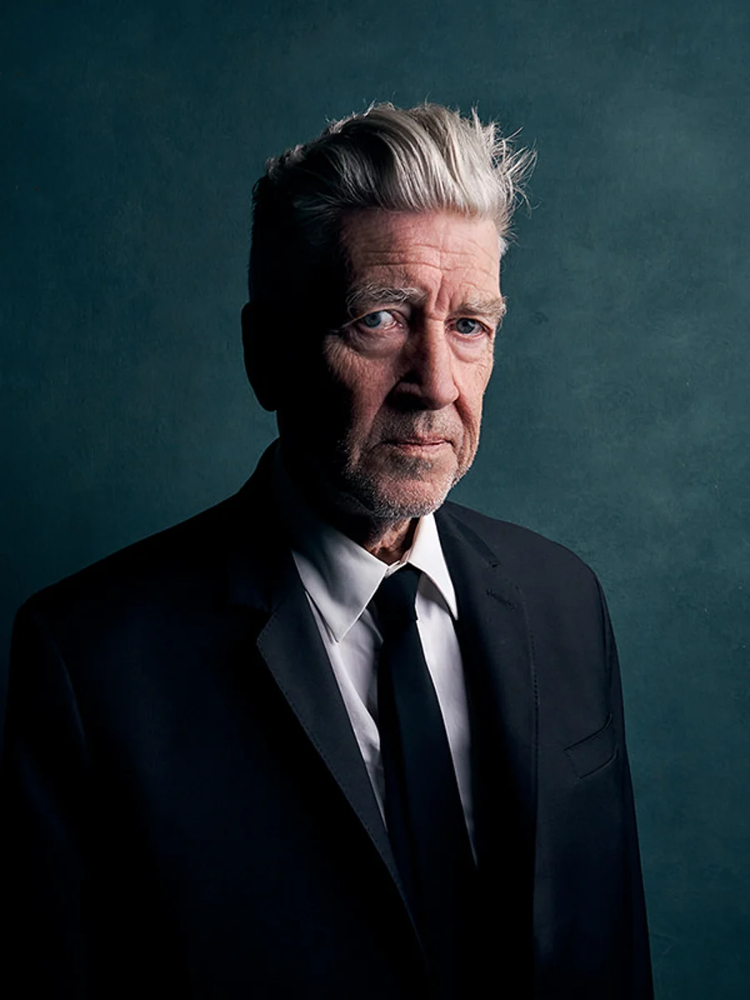

David Lynch
Biography:
Considered among the top living American filmmakers, David Lynch is
revered for his singular, mind-bending vision of reality that both
entrances and disturbs viewers.
Among his best-known feature-length films are:
Eraserhead (1977)
;
The Elephant Man (1980)
, a critical and commercial success that launched his career; and
Blue Velvet (1986)
. His famed television series, the surrealistic murder mystery
Twin Peaks (1990–91)
, has been credited with redefining the possibilities of the medium.
Lynch is also a painter, singer-songwriter, and avid practitioner of and
advocate for transcendental meditation. His work is lush, dark, and
often shot through with violence. Describing his creative process, he
once said:
“I used to go to well-lit diners, because in a well-lit diner I could
sit and think and daydream and I could go to dark places knowing that
I could surface in a well-lit, safe place.”